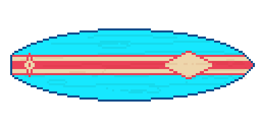

"The more things change, the more they stay the same." Jean-Baptiste Alphonse Karr, 1849
I'm a Senior Data Scientist who has spent the last two years moving deeper into applied AI research and local AI systems. I've been at Broadridge Financial Solutions since 2018. I hold a Bachelor's degree in Environmental Science from Colby College — I took the unconventional route into the world of computer science. Self-taught, I became obsessed with computers from all angles. Many years later, down the rabbit hole, my favorite things to work on are: hardware, AI, bitcoin, and brain emulation (ASI/AGI).
This site is part of Project Arrival — my journey from Senior Data Scientist to AI research engineer. I'm documenting the build, the research, and the path to joining a top AI lab. When I'm not programming, I'm surfing, reading, and tinkering on hardware builds. This site is served on AWS, with code hosted on GitHub — see below.